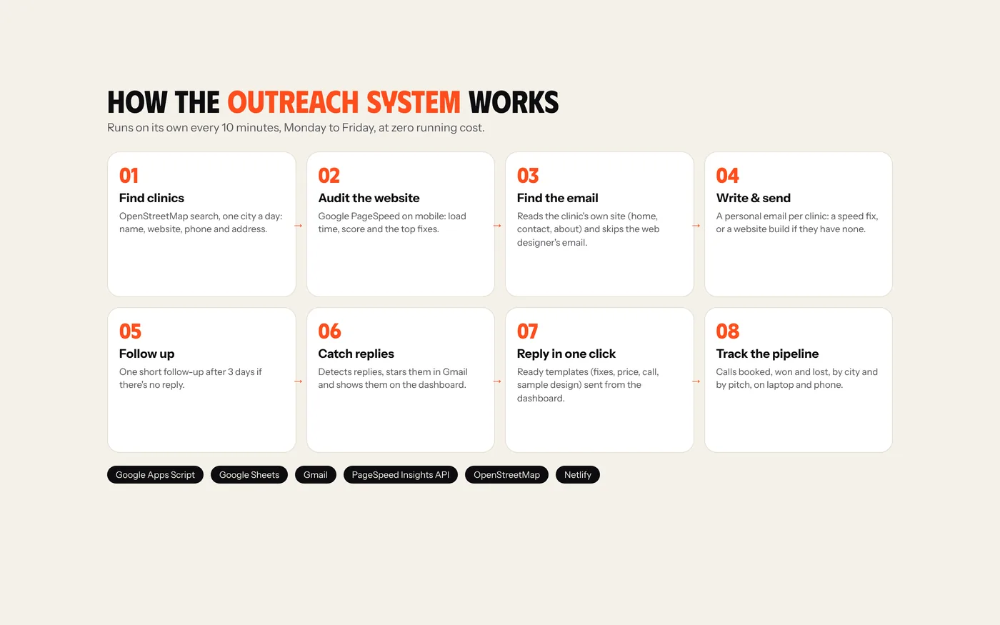
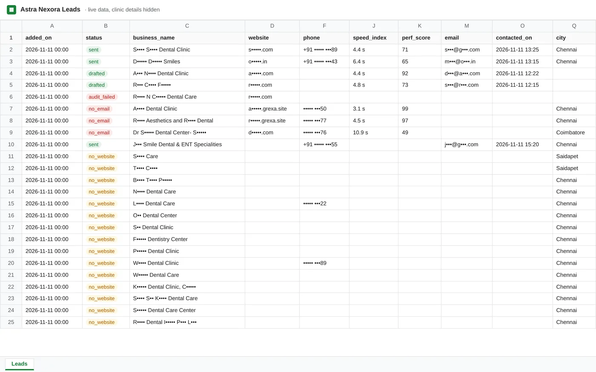
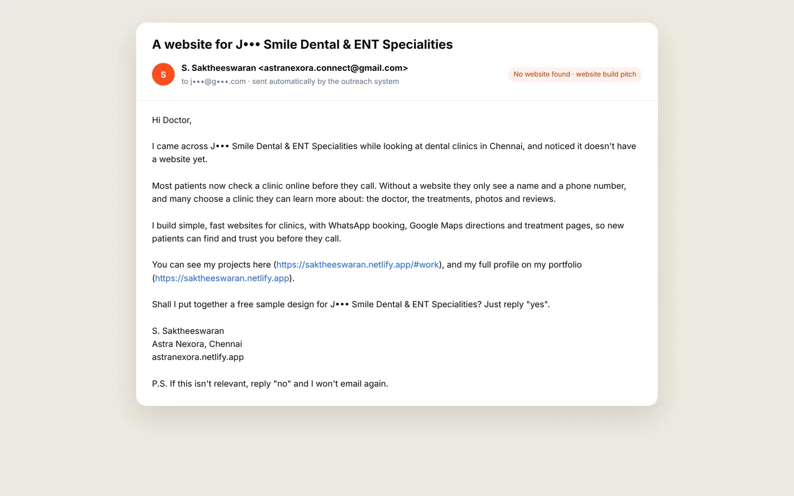
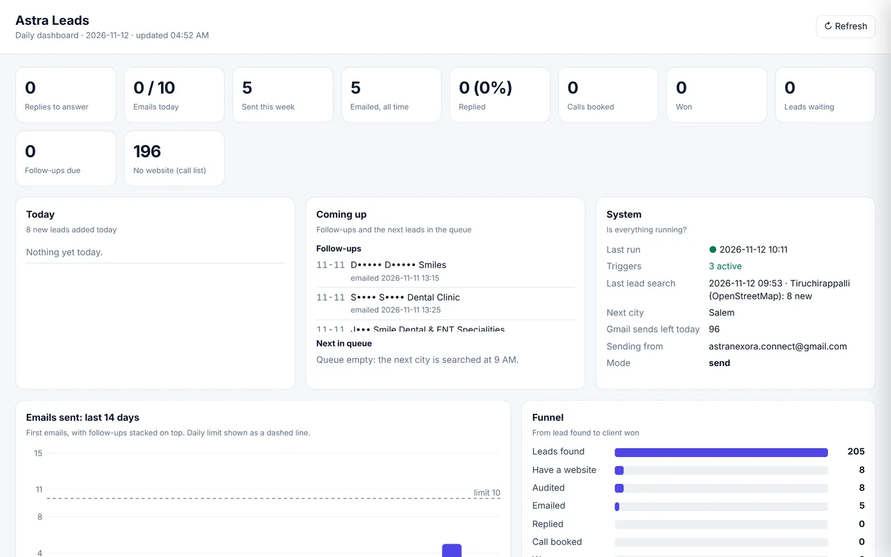
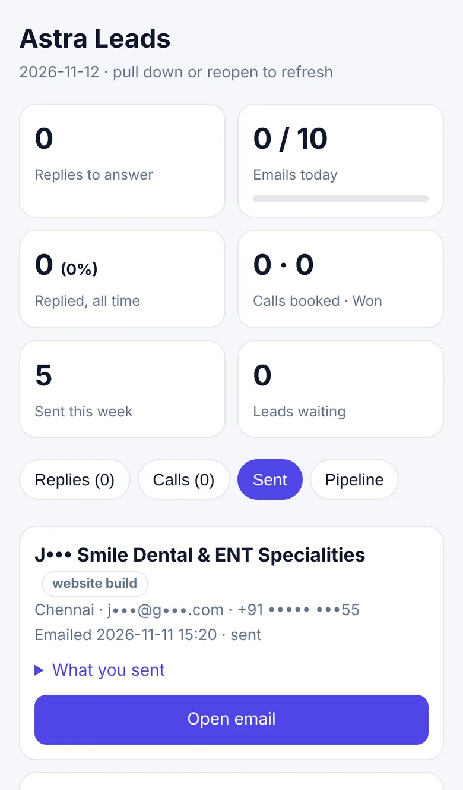
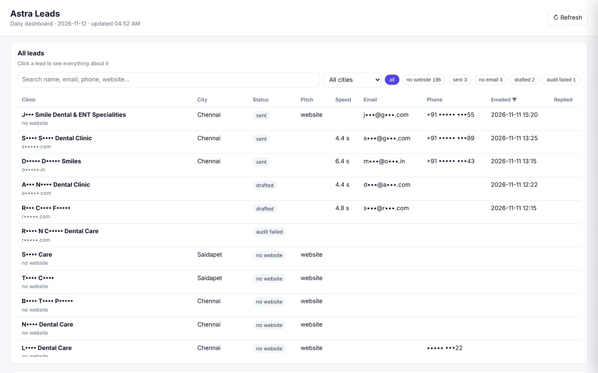

Astra Nexora – Automated Lead Outreach System
A system that finds clinics, audits their websites, writes each one a personal email and tracks every reply, on its own and at zero running cost.

- The problem
Finding clinics, checking each website and writing every email by hand took 15 to 20 minutes per clinic.
- The solution
An automated pipeline that finds clinics, audits their websites with Google PageSpeed, finds the right email and sends a personal pitch, with a dashboard to answer replies.
- The result
Lead research to a personalised email in under a minute per clinic, every weekday, at zero running cost.
01The challenge
Outreach is how a small agency finds new clients, but doing it properly is slow. For every clinic I had to find it, open its website on my phone, run a speed test, look for an email address, and then write an email that mentions what I actually found. That is 15 to 20 minutes per clinic, and it always lost out to client work.
Mass emails were not an option either. A doctor ignores a generic "we do websites" email, and sending lots of them gets a Gmail account flagged as spam.
02My approach
Automate the slow research, not the relationship. The system does the searching, testing and first draft for every clinic, and each email is built around that clinic's own website: its real load time, its real score and the fixes Google suggests. Clinics without a website get a different pitch: an offer to build one.
Sending is deliberately slow and polite: at most 10 emails a day, one every 10 minutes during working hours, one follow-up, and an easy way to say no. Every reply comes back to me, and I answer it myself.
The solution, step by step
Clinics found automatically
Every weekday morning the system searches the next city on its list and adds new clinics to a Google Sheet with their website, phone and address. Duplicates are skipped, and it only searches again once the current list is used up.

A real speed audit for every website
Each website goes through Google PageSpeed Insights on mobile. The sheet records the load time, the performance score and the two fixes that would save the most time. Sites that are already fast are skipped, so nobody gets an email about a problem they don't have.
The right email address
The system reads the clinic's own home, contact and about pages, decodes hidden addresses, and ignores the web designer's email in the footer.
A personal email, not a template blast
Each clinic gets an email about its own website: how long it takes to load, what that costs in patients, a link to the public Google report, and my projects. Clinics without a website get a short pitch to build one. Every email asks for a one-word reply.

Follow-ups and replies handled
If there is no reply after three days, one short follow-up goes out. Replies are detected every 10 minutes, starred in Gmail and moved to the top of the dashboard. Bounces are marked so those addresses are never emailed again.
A dashboard for laptop and phone
Today's activity, emails per day, the funnel from lead to client, reply rate by pitch, leads by city and the full list of leads with every detail, all from the same Google Sheet. It opens in any browser, and on the phone as a home-screen app.


Replies in one click
Open a lead and the reply is already drafted from the right template: send the fixes in plain words, answer a price question, book a call, or close politely. Edit it and send. It goes out in the same Gmail thread.

What changed
- Lead research to a personalised email in under a minute per clinic
- Every email is about the clinic's own website, not a mass mailer
- Runs every weekday on its own, within a safe daily sending limit
- Every reply detected and answered from laptop or phone
- Zero running cost: Google Apps Script, Gmail and free APIs
- First two days live: 205 clinics found across three cities, 8 websites audited, 5 emails sent